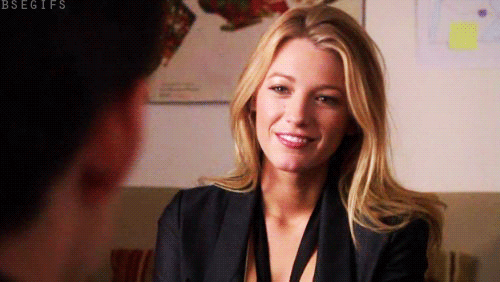

Sejam bem-vindos ao coração pulsante de Manhattan — onde o luxo encontra o drama, e cada olhar carrega uma história. Entre os rostos que dominam o Upper East Side, há um nome que brilha com luz própria: Serena van der Woodsen.
Serena não precisa de apresentações, mas merece uma. Ela é o tipo de pessoa que entra em um ambiente e muda a energia sem dizer uma palavra. Com seu estilo descomplicado, cabelos dourados e uma aura magnética, ela é o reflexo da espontaneidade e da elegância. Serena não segue tendências — ela as cria. E mesmo quando tenta fugir dos holofotes, eles a seguem.

Para Blair, ela é ao mesmo tempo rival e melhor amiga — uma dança constante entre amor e competição. Para Nate, ela é o dilema do coração, a lembrança de um verão inesquecível. Para Chuck, ela é o mistério que ele nunca tentou decifrar, mas sempre respeitou. E para Dan, ela é o sonho que virou realidade — e depois, um turbilhão de emoções.
Mas Serena é mais do que os romances e os escândalos. Ela é liberdade em forma de pessoa. É aquela que some por meses e volta com histórias que ninguém ousaria viver. É vulnerável, intensa, generosa — e, acima de tudo, autêntica.
No mundo de Gossip Girl, onde cada passo é observado e cada segredo tem um preço, Serena caminha com leveza. Porque, mesmo cercada por intrigas, ela nunca deixa de ser... Serena.
Sobre Blair Waldorf
No universo glamouroso e implacável do Upper East Side, há uma figura que não apenas dita as regras — ela as escreve com tiaras e lábios perfeitamente pintados. Blair Waldorf é mais do que uma socialite: ela é uma força da natureza envolta em seda, estratégia e ambição.
Filha de uma estilista renomada, Blair cresceu entre desfiles e jantares de gala, aprendendo desde cedo que aparência é poder — e que o verdadeiro domínio vem da inteligência. Ela é a rainha indiscutível da Constance Billard, onde cada passo seu é seguido com reverência (ou temor). Com seu olhar afiado e planos meticulosamente calculados, Blair não apenas vence — ela encanta.
Mas por trás da fachada impecável, há uma alma intensa. Blair ama com profundidade, sonha com contos de fadas e luta para equilibrar vulnerabilidade e controle. Seu relacionamento com Chuck Bass é uma dança entre paixão e orgulho, e sua amizade com Serena é marcada por rivalidade, lealdade e uma conexão que resiste até aos maiores escândalos.
Blair é aquela que nunca se contenta com pouco. Ela quer o trono, o príncipe, o império — e não tem medo de lutar por isso. E mesmo quando o mundo desaba, ela se levanta com um salto Louboutin e uma frase cortante.
No mundo de Gossip Girl, Blair não é apenas uma personagem. Ela é o padrão. O drama pode girar em torno dela, mas é ela quem decide o roteiro.
Sobre Nate Archibald
Em meio aos arranha-céus de Manhattan e aos segredos do Upper East Side, Nate Archibald é o respiro suave entre os dramas intensos. Filho de uma família tradicional e envolta em escândalos financeiros, Nate carrega o peso das expectativas com uma elegância natural e um olhar sempre sonhador.
Ele é o tipo de rapaz que parece ter saído de um romance clássico — gentil, bonito, leal. Mas por trás da fachada tranquila, há um coração dividido entre o que esperam dele e o que ele realmente deseja. Nate vive dilemas amorosos, amizades testadas e escolhas que o colocam entre o conforto da tradição e a liberdade de seguir seu próprio caminho.
Com Serena, ele compartilha lembranças de verão e uma conexão que nunca se apaga. Com Blair, viveu o conflito entre o certo e o inevitável. E com Chuck, mantém uma amizade complexa — marcada por lealdade, rivalidade e cumplicidade silenciosa.
Nate é o equilíbrio. Ele não grita, não manipula, não domina — mas está sempre presente, como uma constante que acalma o caos. E mesmo quando parece perdido, ele nunca deixa de ser... Nate.
Sobre Chuck Bass
Se o Upper East Side tivesse um símbolo de poder, mistério e provocação, ele se chamaria Chuck Bass. Com seus ternos impecáveis, frases afiadas e olhar penetrante, Chuck não apenas participa do jogo — ele o comanda.
Herdeiro de um império, Chuck cresceu cercado por luxo, mas também por solidão. Sua personalidade é marcada por camadas: arrogante e sedutor por fora, vulnerável e intenso por dentro. Ele é o tipo de personagem que você tenta decifrar, mas ele muda a chave antes que você termine.
Com Blair, vive uma história de amor épica — cheia de reviravoltas, orgulho ferido e momentos de pura entrega. Com Serena, mantém uma relação de respeito e distância. E com Nate, é irmão de alma, mesmo quando os caminhos se cruzam em conflito.
Chuck é o drama, o charme, o risco. Ele é aquele que aparece quando menos se espera e muda tudo com uma frase. No mundo de Gossip Girl, ele não é apenas um personagem — ele é o enigma que todos querem entender, mas poucos conseguem acompanhar.
Chuck é o drama, o charme, o risco. Ele é aquele que aparece quando menos se espera e muda tudo com uma frase. No mundo de Gossip Girl, ele não é apenas um personagem — ele é o enigma que todos querem entender, mas poucos conseguem acompanhar.
Sobre Dan Humphrey
Entre os arranha-céus reluzentes de Manhattan e os segredos do Upper East Side, surge uma figura que parece destoar do luxo e da ostentação: Dan Humphrey. Morador do Brooklyn, filho de um músico e de uma artista, Dan cresceu longe dos privilégios da elite, mas nunca deixou de observar — e escrever — sobre o mundo que tanto o fascinava.
Chamado de Lonely Boy, Dan é inteligente, sensível e apaixonado pela literatura. Seu olhar crítico o torna diferente dos demais personagens: enquanto muitos vivem para manter aparências, ele busca compreender as pessoas por trás das máscaras. Essa postura o coloca em contraste com figuras como Blair e Chuck, mas também o aproxima de Serena, cuja espontaneidade e magnetismo despertam nele uma mistura de admiração e amor.
Dan é, ao mesmo tempo, narrador e participante do drama. Ele observa, analisa e escreve, mas também se deixa envolver pelas intrigas e paixões do Upper East Side. Sua relação com Serena é marcada por intensidade e desencontros, enquanto sua amizade com Vanessa mostra o lado mais humano e pé no chão de sua vida.
No universo de Gossip Girl, Dan representa o olhar de fora — aquele que questiona, que critica, mas que inevitavelmente se deixa seduzir pelo brilho de Manhattan. Ele é prova de que, mesmo vindo do Brooklyn, é impossível escapar do fascínio e das armadilhas do Upper East Side.